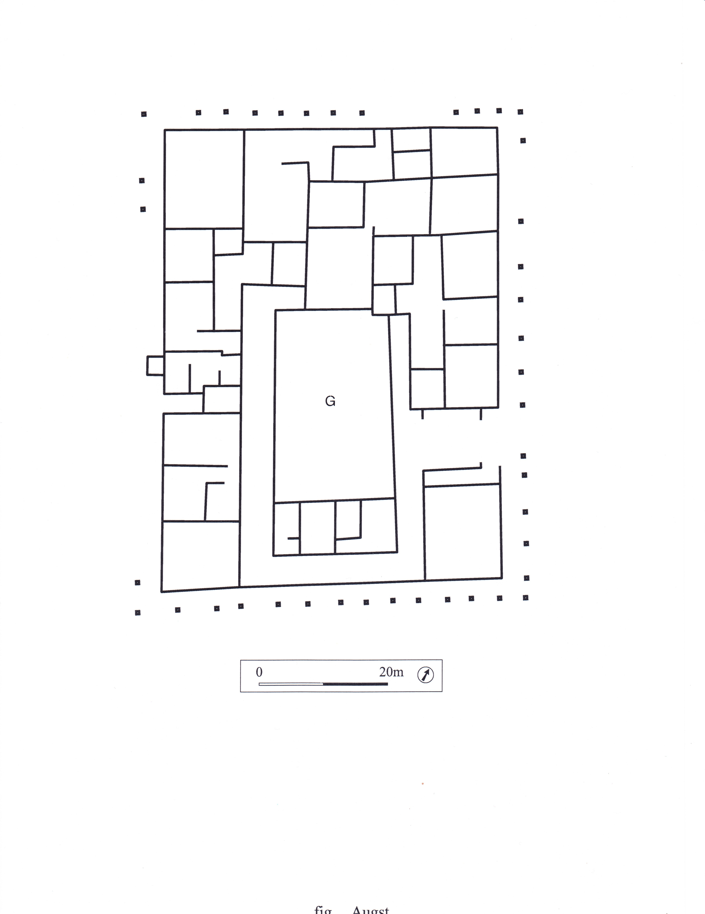

House in Insula 30 at Augusta Raurica
Province
Province Description
Location
Location Description
The town on the Rhine River possessed colonial status since the late 1st century BC. The street grid, as well as many public and residential buildings, are well known from excavations.
Sublocation
Sublocation Description
Garden
House in Insula 30 at Augusta Raurica
Keywords
barrier walls
colonnades
insulae
peristyles (Roman courtyards)
triclinia
water wells
Garden Description
Insula 30, east of the central baths, was taken up by a single house built around 200 AD. This replaced several earlier structures on the site. The insula, including the street colonnades, had an overall area of ca. 48 x 60 meters.
The house had a peristyle courtyard of rectangular shape which was surrounded on three sides by a low wall supporting stone columns. The courtyard was unpaved and almost certainly planted (G in Fig. 1). Entering the house from the east, one passed through a vestibule before arriving in the peristyle corridor around the courtyard. The courtyard wall, enclosing an area 14 x 23.50 meters in size, was fronted by a water channel. There was a well in the north. From the triclinium to the west of the courtyard, one had a view directly into the courtyard.
Maps
Plans
 Fig. 1: Plan of a house in Insula 30 with a garden courtyard (G). Plan adapted from Laur-Belart 1988, fig. 126. (Rights statement)
Images
Dates
Insula: 200 A.D.
Bibliography
- R. Laur-Belart, Führer durch Augusta Raurica, 5th Ed., Basel, 1988, pp. 134-136, fig. 126. (worldcat)
- M. Carroll, Romans, Celts and Germans. The German Provinces of Rome, Stroud, 2001, p. 55, fig. 20. (worldcat)
Periodo ID
Pleiades ID
TGN ID
Contributor
ORCID
Publication date
14 July 2020